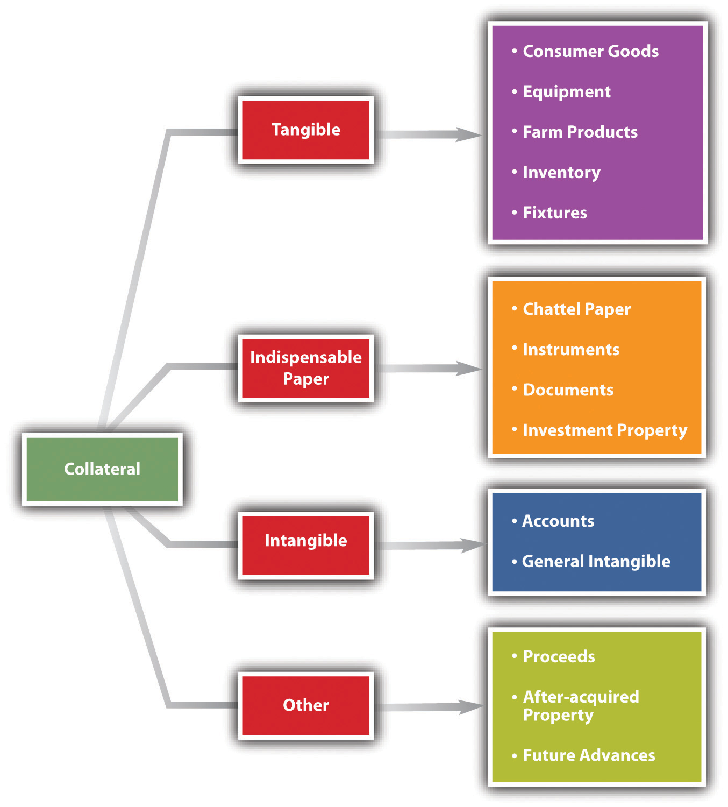
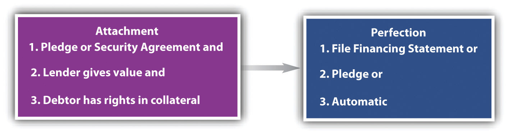

After reading this chapter, you should understand the following:
Creditors want assurances that they will be repaid by the debtor. An oral promise to pay is no security at all, and—as it is oral—it is difficult to prove. A signature loanA loan for which no collateral is pledged. is merely a written promise by the debtor to repay, but the creditor stuck holding a promissory note with a signature loan only—while he may sue a defaulting debtor—will get nothing if the debtor is insolvent. Again, that’s no security at all. Real security for the creditor comes in two forms: by agreement with the debtor or by operation of law without an agreement.
Security obtained through agreement comes in three major types: (1) personal property security (the most common form of security); (2) suretyship—the willingness of a third party to pay if the primarily obligated party does not; and (3) mortgage of real estate.
Security obtained through operation of law is known as a lienAn encumbrance upon property to secure payment.. Derived from the French for “string” or “tie,” a lien is the legal hold that a creditor has over the property of another in order to secure payment or discharge an obligation.
In this chapter, we take up security interests in personal property and suretyship. In the next chapter, we look at mortgages and nonconsensual liens.
The law of secured transactions consists of five principal components: (1) the nature of property that can be the subject of a security interest; (2) the methods of creating the security interest; (3) the perfection of the security interest against claims of others; (4) priorities among secured and unsecured creditors—that is, who will be entitled to the secured property if more than one person asserts a legal right to it; and (5) the rights of creditors when the debtor defaults. After considering the source of the law and some key terminology, we examine each of these components in turn.
Here is the simplest (and most common) scenario: Debtor borrows money or obtains credit from Creditor, signs a note and security agreement putting up collateral, and promises to pay the debt or, upon Debtor’s default, let Creditor (secured party) take possession of (repossess) the collateral and sell it. Figure 33.1 "The Grasping Hand" illustrates this scenario—the grasping hand is Creditor’s reach for the collateral, but the hand will not close around the collateral and take it (repossess) unless Debtor defaults.
Figure 33.1 The Grasping Hand

Article 9 of the Uniform Commercial Code (UCC) governs security interests in personal property. The UCC defines the scope of the article (here slightly truncated):Uniform Commercial Code, Section 9-109.
This chapter applies to the following:
As always, it is necessary to review some definitions so that communication on the topic at hand is possible. The secured transaction always involves a debtor, a secured party, a security agreement, a security interest, and collateral.
Article 9 applies to any transaction “that creates a security interest.” The UCC in Section 1-201(35) defines security interestRight in personal property to secure payment or performance of an obligation. as “an interest in personal property or fixtures which secures payment or performance of an obligation.”
Security agreementAgreement that grants a security interest. is “an agreement that creates or provides for a security interest.” It is the contract that sets up the debtor’s duties and the creditor’s rights in event the debtor defaults.Uniform Commercial Code, Section 9-102(a)(73).
CollateralProperty given as security for a debt. “means the property subject to a security interest or agricultural lien.”Uniform Commercial Code, Section 9-102(12).
Purchase-money security interestThe security interest held by the seller of collateral to secure payment of all or part of the price. (PMSI) is the simplest form of security interest. Section 9-103(a) of the UCC defines “purchase-money collateral” as “goods or software that secures a purchase-money obligation with respect to that collateral.” A PMSI arises where the debtor gets credit to buy goods and the creditor takes a secured interest in those goods. Suppose you want to buy a big hardbound textbook on credit at your college bookstore. The manager refuses to extend you credit outright but says she will take back a PMSI. In other words, she will retain a security interest in the book itself, and if you don’t pay, you’ll have to return the book; it will be repossessed. Contrast this situation with a counteroffer you might make: because she tells you not to mark up the book (in the event that she has to repossess it if you default), you would rather give her some other collateral to hold—for example, your gold college signet ring. Her security interest in the ring is not a PMSI but a pledge; a PMSI must be an interest in the particular goods purchased. A PMSI would also be created if you borrowed money to buy the book and gave the lender a security interest in the book.
Whether a transaction is a lease or a PMSI is an issue that frequently arises. The answer depends on the facts of each case. However, a security interest is created if (1) the lessee is obligated to continue payments for the term of the lease; (2) the lessee cannot terminate the obligation; and (3) one of several economic tests, which are listed in UCC Section 1-201 (37), is met. For example, one of the economic tests is that “the lessee has an option to become owner of the goods for no additional consideration or nominal additional consideration upon compliance with the lease agreement.”
The issue of lease versus security interest gets litigated because of the requirements of Article 9 that a security interest be perfected in certain ways (as we will see). If the transaction turns out to be a security interest, a lessor who fails to meet these requirements runs the risk of losing his property to a third party. And consider this example. Ferrous Brothers Iron Works “leases” a $25,000 punch press to Millie’s Machine Shop. Under the terms of the lease, Millie’s must pay a yearly rental of $5,000 for five years, after which time Millie’s may take title to the machine outright for the payment of $1. During the period of the rental, title remains in Ferrous Brothers. Is this “lease” really a security interest? Since ownership comes at nominal charge when the entire lease is satisfied, the transaction would be construed as one creating a security interest. What difference does this make? Suppose Millie’s goes bankrupt in the third year of the lease, and the trustee in bankruptcy wishes to sell the punch press to satisfy debts of the machine shop. If it were a true lease, Ferrous Brothers would be entitled to reclaim the machine (unless the trustee assumed the lease). But if the lease is really intended as a device to create a security interest, then Ferrous Brothers can recover its collateral only if it has otherwise complied with the obligations of Article 9—for example, by recording its security interest, as we will see.
Now we return to definitions.
DebtorOne who owes money or a duty of performance to another. is “a person (1) having an interest in the collateral other than a security interest or a lien; (2) a seller of accounts, chattel paper, payment intangibles, or promissory notes; or (3) a consignee.”Uniform Commercial Code, Section 9-102(a)(28).
ObligorOne who owes an obligation. is “a person that, with respect to an obligation secured by a security interest in or an agricultural lien on the collateral, (i) owes payment or other performance of the obligation, (ii) has provided property other than the collateral to secure payment or other performance of the obligation, or (iii) is otherwise accountable in whole or in part for payment or other performance of the obligation.”Uniform Commercial Code, Section 9-102 (59). Here is example 1 from the Official Comment to UCC Section 9-102: “Behnfeldt borrows money and grants a security interest in her Miata to secure the debt. Behnfeldt is a debtor and an obligor.”
Behnfeldt is a debtor because she has an interest in the car—she owns it. She is an obligor because she owes payment to the creditor. Usually the debtor is the obligor.
A secondary obligor is “an obligor to the extent that: (A) [the] obligation is secondary; or (b) [the person] has a right of recourse with respect to an obligation secured by collateral against the debtor, another obligor, or property of either.”Uniform Commercial Code, Section 9-102(a)(71). The secondary obligor is a guarantor (surety) of the debt, obligated to perform if the primary obligor defaults. Consider example 2 from the Official Comment to Section 9-102: “Behnfeldt borrows money and grants a security interest in her Miata to secure the debt. Bruno cosigns a negotiable note as maker. As before, Behnfeldt is the debtor and an obligor. As an accommodation party, Bruno is a secondary obligor. Bruno has this status even if the note states that her obligation is a primary obligation and that she waives all suretyship defenses.”
Again, usually the debtor is the obligor, but consider example 3 from the same Official Comment: “Behnfeldt borrows money on an unsecured basis. Bruno cosigns the note and grants a security interest in her Honda to secure her [Behnfeldt’s] obligation. Inasmuch as Behnfeldt does not have a property interest in the Honda, Behnfeldt is not a debtor. Having granted the security interest, Bruno is the debtor. Because Behnfeldt is a principal obligor, she is not a secondary obligor. Whatever the outcome of enforcement of the security interest against the Honda or Bruno’s secondary obligation, Bruno will look to Behnfeldt for her losses. The enforcement will not affect Behnfeldt’s aggregate obligations.”
Secured partyThe creditor who has a security interest in a debtor’s collateral. is “a person in whose favor a security interest is created or provided for under a security agreement,” and it includes people to whom accounts, chattel paper, payment intangibles, or promissory notes have been sold; consignors; and others under Section 9-102(a)(72).
Chattel mortgageA security device by which a mortgagee takes security interest in personal property of the mortgagor; mostly superseded by other security arrangements under UCC Article 9. means “a debt secured against items of personal property rather than against land, buildings and fixtures.”Commercial Brokers, Inc., “Glossary of Real Estate Terms,” http://www.cbire.com/index.cfm/fuseaction/terms.list/letter/C/contentid/32302EC3-81D5-47DF-A9CBA32FAE38B22A.
Now we examine what property may be put up as security—collateral. Collateral is—again—property that is subject to the security interest. It can be divided into four broad categories: goods, intangible property, indispensable paper, and other types of collateral.
Tangible property as collateral is goods. Goods means “all things that are movable when a security interest attaches. The term includes (i) fixtures, (ii) standing timber that is to be cut and removed under a conveyance or contract for sale, (iii) the unborn young of animals, (iv) crops grown, growing, or to be grown, even if the crops are produced on trees, vines, or bushes, and (v) manufactured homes. The term also includes a computer program embedded in goods.”Uniform Commercial Code, Section 9-102(44). Goods are divided into several subcategories; six are taken up here.
These are “goods used or bought primarily for personal, family, or household purposes.”Uniform Commercial Code, Section 9-102(a)(48).
“Goods, other than farm products, held by a person for sale or lease or consisting of raw materials, works in progress, or material consumed in a business.”Uniform Commercial Code, Section 9-102(a)(48).
“Crops, livestock, or other supplies produced or used in farming operations,” including aquatic goods produced in aquaculture.Uniform Commercial Code, Section 9-102(a)(34).
This is the residual category, defined as “goods other than inventory, farm products, or consumer goods.”Uniform Commercial Code, Section 9-102(a)(33).
These are “goods that have become so related to particular real property that an interest in them arises under real property law.”Uniform Commercial Code, Section 9-102(a)(41). Examples would be windows, furnaces, central air conditioning, and plumbing fixtures—items that, if removed, would be a cause for significant reconstruction.
These are “goods that are physically united with other goods in such a manner that the identity of the original goods is lost.”Uniform Commercial Code, Section 9-102(a)(1). A new engine installed in an old automobile is an accession.
Two types of collateral are neither goods nor indispensible paper: accounts and general intangibles.
This type of intangible property includes accounts receivable (the right to payment of money), insurance policy proceeds, energy provided or to be provided, winnings in a lottery, health-care-insurance receivables, promissory notes, securities, letters of credit, and interests in business entities.Uniform Commercial Code, Section 9-102(a)(2). Often there is something in writing to show the existence of the right—such as a right to receive the proceeds of somebody else’s insurance payout—but the writing is merely evidence of the right. The paper itself doesn’t have to be delivered for the transfer of the right to be effective; that’s done by assignment.
General intangibles refers to “any personal property, including things in action, other than accounts, commercial tort claims, deposit accounts, documents, goods, instruments, investment property, letter-of-credit rights, letters of credit, money, and oil, gas, or other minerals before extraction.” General intangibles include payment intangibles and software.Uniform Commercial Code, Section 9-102(42).
This oddly named category is the middle ground between goods—stuff you can touch—and intangible property. It’s called “indispensable” because although the right to the value—such as a warehouse receipt—is embodied in a written paper, the paper itself is indispensable for the transferee to access the value. For example, suppose Deborah Debtor borrows $3,000 from Carl Creditor, and Carl takes a security interest in four designer chairs Deborah owns that are being stored in a warehouse. If Deborah defaults, Carl has the right to possession of the warehouse receipt: he takes it to the warehouser and is entitled to take the chairs and sell them to satisfy the obligation. The warehouser will not let Carl have the chairs without the warehouse receipt—it’s indispensable paper. There are four kinds of indispensable paper.
Chattel is another word for goods. Chattel paper is a record (paper or electronic) that demonstrates both “a monetary obligation and a security interest either in certain goods or in a lease on certain goods.”Uniform Commercial Code, Section 9-102(11). The paper represents a valuable asset and can itself be used as collateral. For example, Creditor Car Company sells David Debtor an automobile and takes back a note and security agreement (this is a purchase-money security agreement; the note and security agreement is chattel paper). The chattel paper is not yet collateral; the automobile is. Now, though, Creditor Car Company buys a new hydraulic lift from Lift Co., and grants Lift Co. a security interest in Debtor’s chattel paper to secure Creditor Car’s debt to Lift Co. The chattel paper is now collateral. Chattel paper can be tangible (actual paper) or electronic.
This category includes documents of title—bills of lading and warehouse receipts are examples.
An “instrument” here is “a negotiable instrument (checks, drafts, notes, certificates of deposit) or any other writing that evidences a right to the payment of a monetary obligation, is not itself a security agreement or lease, and is of a type that in the ordinary course of business is transferred by delivery with any necessary indorsement or assignment.” “Instrument” does not include (i) investment property, (ii) letters of credit, or (iii) writings that evidence a right to payment arising out of the use of a credit or charge card or information contained on or for use with the card.Uniform Commercial Code, Section 9-102(a)(47).
This includes securities (stock, bonds), security accounts, commodity accounts, and commodity contracts.Uniform Commercial Code, Section 9-102(a)(49). Securities may be certified (represented by a certificate) or uncertified (not represented by a certificate).Uniform Commercial Code, Section 8-102(a)(4) and (a)(18).
Among possible other types of collateral that may be used as security is the floating lienA lien that is expanded to cover any additional property that is acquired by the debtor while the debt is outstanding.. This is a security interest in property that was not in the possession of the debtor when the security agreement was executed. The floating lien creates an interest that floats on the river of present and future collateral and proceeds held by—most often—the business debtor. It is especially useful in loans to businesses that sell their collateralized inventory. Without the floating lien, the lender would find its collateral steadily depleted as the borrowing business sells its products to its customers. Pretty soon, there’d be no security at all. The floating lien includes the following:
Future advances. Here the security agreement calls for the collateral to stand for both present and future advances of credit without any additional paperwork.
Here are examples of future advances:
See Figure 33.2 "Tangibles and Intangibles as Collateral".
Figure 33.2 Tangibles and Intangibles as Collateral
AttachmentThe process by which a security interest becomes enforceable against the debtor with respect to the collateral. is the term used to describe when a security interest becomes enforceable against the debtor with respect to the collateral. In Figure 33.1 "The Grasping Hand", ”Attachment” is the outreached hand that is prepared, if the debtor defaults, to grasp the collateral.Uniform Commercial Code, Section 9-203(a).
There are three requirements for attachment: (1) the secured party gives value; (2) the debtor has rights in the collateral or the power to transfer rights in it to the secured party; (3) the parties have a security agreement “authenticated” (signed) by the debtor, or the creditor has possession of the collateral.
The creditor, or secured party, must give “value” for the security interest to attach. The UCC, in Section 1-204, provides that
a person gives ‘value’ for rights if he acquires them
(1) in return for a binding commitment to extend credit or for the extension of immediately available credit whether or not drawn upon and whether or not a charge-back is provided for in the event of difficulties in collection; or
(2) as security for or in total or partial satisfaction of a pre-existing claim; or
(3) by accepting delivery pursuant to a pre-existing contract for purchase; or
(4) generally, in return for any consideration sufficient to support a simple contract.
Suppose Deborah owes Carl $3,000. She cannot repay the sum when due, so she agrees to give Carl a security interest in her automobile to the extent of $3,000 in return for an extension of the time to pay. That is sufficient value.
The debtor must have rights in the collateral. Most commonly, the debtor owns the collateral (or has some ownership interest in it). The rights need not necessarily be the immediate right to possession, but they must be rights that can be conveyed.Uniform Commercial Code, Section 9-203(b)(2). A person can’t put up as collateral property she doesn’t own.
The debtor most often signs the written security agreement, or contract. The UCC says that “the debtor [must have] authenticated a security agreement that provides a description of the collateral.…” “Authenticating” (or “signing,” “adopting,” or “accepting”) means to sign or, in recognition of electronic commercial transactions, “to execute or otherwise adopt a symbol, or encrypt or similarly process a record…with the present intent of the authenticating person to identify the person and adopt or accept a record.” The “record” is the modern UCC’s substitution for the term “writing.” It includes information electronically stored or on paper.Uniform Commercial Code, Section 9-102, Official Comment 9. Here is a free example of a security agreement online: Docstoc, “Free Business Templates—Sample Open-Ended Security Agreement,” http://www.docstoc.com/docs/271920/Free-Business-Templates—-Sample-Open-Ended-Security-Agreement.
The “authenticating record” (the signed security agreement) is not required in some cases. It is not required if the debtor makes a pledgeThe delivery of goods to a creditor as security for the debt. of the collateral—that is, delivers it to the creditor for the creditor to possess. For example, upon a creditor’s request of a debtor for collateral to secure a loan of $3,000, the debtor offers up his stamp collection. The creditor says, “Fine, have it appraised (at your expense) and show me the appraisal. If it comes in at $3,000 or more, I’ll take your stamp collection and lock it in my safe until you’ve repaid me. If you don’t repay me, I’ll sell it.” A creditor could take possession of any goods and various kinds of paper, tangible or intangible. In commercial transactions, it would be common for the creditor to have possession of—actually or virtually—certified securities, deposit accounts, electronic chattel paper, investment property, or other such paper or electronic evidence of value.Uniform Commercial Code, Section 9-203(b)(3)(B-D).
Again, Figure 33.1 "The Grasping Hand" diagrams the attachment, showing the necessary elements: the creditor gives value, the debtor has rights in collateral, and there is a security agreement signed (authenticated) by the debtor. If the debtor defaults, the creditor’s “hand” will grab (repossess) the collateral.
As between the debtor and the creditor, attachment is fine: if the debtor defaults, the creditor will repossess the goods and—usually—sell them to satisfy the outstanding obligation. But unless an additional set of steps is taken, the rights of the secured party might be subordinated to the rights of other secured parties, certain lien creditors, bankruptcy trustees, and buyers who give value and who do not know of the security interest. PerfectionThe process by which a secured party announces to the world her secured interest in particular goods. is the secured party’s way of announcing the security interest to the rest of the world. It is the secured party’s claim on the collateral.
There are five ways a creditor may perfect a security interest: (1) by filing a financing statement, (2) by taking or retaining possession of the collateral, (3) by taking control of the collateral, (4) by taking control temporarily as specified by the UCC, or (5) by taking control automatically.
“Except as otherwise provided…a financing statement must be filed to perfect all security agreements.”Uniform Commercial Code, Section 9-310(a).
A financing statementFiling of a notice in the appropriate state office to perfect a security interest. is a simple notice showing the creditor’s general interest in the collateral. It is what’s filed to establish the creditor’s “dibs.”
It may consist of the security agreement itself, as long as it contains the information required by the UCC, but most commonly it is much less detailed than the security agreement: it “indicates merely that a person may have a security interest in the collateral[.]…Further inquiry from the parties concerned will be necessary to disclose the full state of affairs.”Uniform Commercial Code, Section 9-502, Official Comment 2. The financing statement must provide the following information:
The form of the financing statement may vary from state to state, but see Figure 33.3 "UCC-1 Financing Statement" for a typical financing statement. Minor errors or omissions on the form will not make it ineffective, but the debtor’s signature is required unless the creditor is authorized by the debtor to make the filing without a signature, which facilitates paperless filing.Uniform Commercial Code, Section 9-506; Uniform Commercial Code, Section, 9-502, Comment 3.
Figure 33.3 UCC-1 Financing Statement

Generally, the financing statement is effective for five years; a continuation statementAn amendment of a financing statement that identifies, by its file number, the initial financing statement to which it relates and that indicates that it is a continuation statement for, or that it is filed to continue the effectiveness of, the identified financing statement. may be filed within six months before the five-year expiration date, and it is good for another five years.Uniform Commercial Code, Section 9-515. Manufactured-home filings are good for thirty years. When the debtor’s obligation is satisfied, the secured party files a termination statementThe notice from a creditor that the debtor’s obligations are discharged. if the collateral was consumer goods; otherwise—upon demand—the secured party sends the debtor a termination statement.Uniform Commercial Code, Section 9-513.
The UCC also has rules for continued perfection of security interests when the debtor—whether an individual or an association (corporation)—moves from one state to another. Generally, an interest remains perfected until the earlier of when the perfection would have expired or for four months after the debtor moves to a new jurisdiction.Uniform Commercial Code, Section 9-316.
For most real-estate-related filings—ore to be extracted from mines, agricultural collateral, and fixtures—the place to file is with the local office that files mortgages, typically the county auditor’s office.Uniform Commercial Code, Section 9-501. For other collateral, the filing place is as duly authorized by the state. In some states, that is the office of the Secretary of State; in others, it is the Department of Licensing; or it might be a private party that maintains the state’s filing system.Uniform Commercial Code, Section 9-501(a)(2). The filing should be made in the state where the debtor has his or her primary residence for individuals, and in the state where the debtor is organized if it is a registered organization.Uniform Commercial Code, Section 9-307(b). The point is, creditors need to know where to look to see if the collateral offered up is already encumbered. In any event, filing the statement in more than one place can’t hurt. The filing office will provide instructions on how to file; these are available online, and electronic filing is usually available for at least some types of collateral.
Some transactions are exempt from the filing provision. The most important category of exempt collateral is that covered by state certificate of title laws. For example, many states require automobile owners to obtain a certificate of title from the state motor vehicle office. Most of these states provide that it is not necessary to file a financing statement in order to perfect a security interest in an automobile. The reason is that the motor vehicle regulations require any security interests to be stated on the title, so that anyone attempting to buy a car in which a security interest had been created would be on notice when he took the actual title certificate.Uniform Commercial Code, Section 9-303.
The UCC provides that certain types of collateral are automatically perfected but only for a while: “A security interest in certificated securities, or negotiable documents, or instruments is perfected without filing or the taking of possession for a period of twenty days from the time it attaches to the extent that it arises for new value given under an authenticated security agreement.”Uniform Commercial Code, Section 9-312(e). Similar temporary perfection covers negotiable documents or goods in possession of a bailee, and when a security certificate or instrument is delivered to the debtor for sale, exchange, presentation, collection, enforcement, renewal, or registration.Uniform Commercial Code, Section 9-312(f) and (g). After the twenty-day period, perfection would have to be by one of the other methods mentioned here.
A secured party may perfect the security interest by possession where the collateral is negotiable documents, goods, instruments, money, tangible chattel paper, or certified securities.Uniform Commercial Code, Section 9-313. This is a pledge of assets (mentioned in the example of the stamp collection). No security agreement is required for perfection by possession.
A variation on the theme of pledge is field warehousingMortgage arrangement in which a lender secures its loan with a lien on items stored in a warehouse or at the debtor’s place of business, with access to the items controlled by the lender, who releases goods as they are paid for by the borrower.. When the pawnbroker lends money, he takes possession of the goods—the watch, the ring, the camera. But when large manufacturing concerns wish to borrow against their inventory, taking physical possession is not necessarily so easy. The bank does not wish to have shipped to its Wall Street office several tons of copper mined in Colorado. Bank employees perhaps could go west to the mine and take physical control of the copper, but banks are unlikely to employ people and equipment necessary to build a warehouse on the spot. Thus this so-called field pledge is rare.
More common is the field warehouse. The field warehouse can take one of two forms. An independent company can go to the site and put up a temporary structure—for example, a fence around the copper—thus establishing physical control of the collateral. Or the independent company can lease the warehouse facilities of the debtor and post signs indicating that the goods inside are within its sale custody. Either way, the goods are within the physical possession of the field warehouse service. The field warehouse then segregates the goods secured to the particular bank or finance company and issues a warehouse receipt to the lender for those goods. The lender is thus assured of a security interest in the collateral.
“A security interest in investment property, deposit accounts, letter-of-credit rights, or electronic chattel paper may be perfected by control of the collateral.”Uniform Commercial Code, Section 9-314. “Control” depends on what the collateral is. If it’s a checking account, for example, the bank with which the deposit account is maintained has “control”: the bank gets a security interest automatically because, as Official Comment 3 to UCC Section 9-104 puts it, “all actual and potential creditors of the debtor are always on notice that the bank with which the debtor’s deposit account is maintained may assert a claim against the deposit account.” “Control” of electronic chattel paper of investment property, and of letter-of-credit rights is detailed in Sections 9-105, 9-106, and 9-107. Obtaining “control” means that the creditor has taken whatever steps are necessary, given the manner in which the items are held, to place itself in a position where it can have the items sold, without further action by the owner.Uniform Commercial Code, Section 8-106, Official Comment 1.
The fifth mechanism of perfection is addressed in Section 9-309 of the UCC: there are several circumstances where a security interest is perfected upon mere attachment. The most important here is automatic perfectionPerfection by mere attachment. of a purchase-money security interest given in consumer goods. If a seller of consumer goods takes a PMSI in the goods sold, then perfection of the security interest is automatic. But the seller may file a financial statement and faces a risk if he fails to file and the consumer debtor sells the goods. Under Section 9-320(b), a buyer of consumer goods takes free of a security interest, even though perfected, if he buys without knowledge of the interest, pays value, and uses the goods for his personal, family, or household purposes—unless the secured party had first filed a financing statement covering the goods.
Figure 33.4 Attachment and Perfection
A creditor may be secured—allowed to take the debtor’s property upon debtor’s default—by agreement between the parties or by operation of law. The law governing agreements for personal property security is Article 9 of the UCC. The creditor’s first step is to attach the security interest. This is usually accomplished when the debtor, in return for value (a loan or credit) extended from the creditor, puts up as collateral some valuable asset in which she has an interest and authenticates (signs) a security agreement (the contract) giving the creditor a security interest in collateral and allowing that the creditor may take it if the debtor defaults. The UCC lists various kinds of assets that can be collateralized, ranging from tangible property (goods), to assets only able to be manifested by paper (indispensable paper), to intangible assets (like patent rights). Sometimes no security agreement is necessary, mostly if the creditor takes possession of the collateral. After attachment, the prudent creditor will want to perfect the security interest to make sure no other creditors claim an interest in the collateral. Perfection is most often accomplished by filing a financing statement in the appropriate place to put the world on notice of the creditor’s interest. Perfection can also be achieved by a pledge (possession by the secured creditor) or by “control” of certain assets (having such control over them as to be able to sell them if the debtor defaults). Perfection is automatic temporarily for some items (certified securities, instruments, and negotiable documents) but also upon mere attachment to purchase-money security interests in consumer goods.
Priorities: this is the money question. Who gets what when a debtor defaults? Depending on how the priorities in the collateral were established, even a secured creditor may walk away with the collateral or with nothing. Here we take up the general rule and the exceptions.
The general rule regarding priorities is, to use a quotation attributed to a Southern Civil War general, the one who wins “gets there firstest with the mostest.” The first to do the best job of perfecting wins. The Uniform Commercial Code (UCC) creates a race of diligence among competitors.
If both parties have perfected, the first to perfect wins. If one has perfected and one attached, the perfected party wins. If both have attached without perfection, the first to attach wins. If neither has attached, they are unsecured creditors. Let’s test this general rule against the following situations:
To rephrase: An attached security interest prevails over other unsecured creditors (unsecured creditors lose to secured creditors, perfected or unperfected). If both parties are secured (have attached the interest), the first to perfect wins.Uniform Commercial Code, Section 9-322(a)(2). If both parties have perfected, the first to have perfected wins.Uniform Commercial Code, Section 9-322(a)(1).
There are three immediate exceptions to the general rule, and several other exceptions, all of which—actually—make some straightforward sense even if it sounds a little complicated to explain them.
We call the following three exceptions “immediate” ones because they allow junior filers immediate priority to take their collateral before the debtor’s other creditors get it. They all involve purchase-money security interests (PMSIs), so if the debtor defaults, the creditor repossesses the very goods the creditor had sold the debtor.
(1) Purchase-money security interest in goods (other than inventory or livestock). The UCC provides that “a perfected purchase-money security interest in goods other than inventory or livestock has priority over a conflicting security interest in the same goods…if the purchase-money security interest is perfected when debtor receives possession of the collateral or within 20 days thereafter.”Uniform Commercial Code, Section 9-324(a). The Official Comment to this UCC section observes that “in most cases, priority will be over a security interest asserted under an after-acquired property clause.”
Suppose Susan manufactures fur coats. On February 1, Rosemary advances her $10,000 under a security agreement covering all Susan’s machinery and containing an after-acquired property clause. Rosemary files a financing statement that same day. On March 1, Susan buys a new machine from Erika for $5,000 and gives her a security interest in the machine; Erika files a financing statement within twenty days of the time that the machine is delivered to Susan. Who has priority if Susan defaults on her loan payments? Under the PMSI rule, Erika has priority, because she had a PMSI. Suppose, however, that Susan had not bought the machine from Erika but had merely given her a security interest in it. Then Rosemary would have priority, because her filing was prior to Erika’s.
What would happen if this kind of PMSI in noninventory goods (here, equipment) did not get priority status? A prudent Erika would not extend credit to Susan at all, and if the new machine is necessary for Susan’s business, she would soon be out of business. That certainly would not inure to the benefit of Rosemary. It is, mostly, to Rosemary’s advantage that Susan gets the machine: it enhances Susan’s ability to make money to pay Rosemary.
(2) Purchase-money security interest in inventory. The UCC provides that a perfected PMSI in inventory has priority over conflicting interests in the same inventory, provided that the PMSI is perfected when the debtor receives possession of the inventory, the PMSI-secured party sends an authenticated notification to the holder of the conflicting interest and that person receives the notice within five years before the debtor receives possession of the inventory, and the notice states that the person sending it has or expects to acquire a PMSI in the inventory and describes the inventory.Uniform Commercial Code, Section 9-324(b). The notice requirement is aimed at protecting a secured party in the typical situation in which incoming inventory is subject to a prior agreement to make advances against it. If the original creditor gets notice that new inventory is subject to a PMSI, he will be forewarned against making an advance on it; if he does not receive notice, he will have priority. It is usually to the earlier creditor’s advantage that her debtor is able to get credit to “floor” (provide) inventory, without selling which, of course, the debtor cannot pay back the earlier creditor.
(3) Purchase-money security interest in fixtures. Under UCC Section 9-334(e), a perfected security in fixtures has priority over a mortgage if the security interest is a PMSI and the security interest is perfected by a fixture filing before the goods become fixtures or within twenty days after. A mortgagee is usually a bank (the mortgagor is the owner of the real estate, subject to the mortgagee’s interest). The bank’s mortgage covers the real estate and fixtures, even fixtures added after the date of the mortgage (after-acquired property clause). In accord with the general rule, then, the mortgagee/bank would normally have priority if the mortgage is recorded first, as would a fixture filing if made before the mortgage was recorded. But with the exception noted, the bank’s interest is subordinate to the fixture-seller’s later-perfected PMSI. Example: Susan buys a new furnace from Heating Co. to put in her house. Susan gave a bank a thirty-year mortgage on the house ten years before. Heating Co. takes back a PMSI and files the appropriate financing statement before or within twenty days of installation. If Susan defaults on her loan to the bank, Heating Co. would take priority over the bank. And why not? The mortgagee has, in the long run, benefited from the improvement and modernization of the real estate. (Again, there are further nuances in Section 9-334 beyond our scope here.) A non-PMSI in fixtures or PMSIs perfected more than twenty days after goods become a fixture loses out to prior recorded interests in the realty.
We have noted the three immediate exceptions to the general rule that “the firstest with the mostest” prevails. There are some other exceptions.
Think about how these other exceptions might arise: who might want to take property subject to a security agreement (not including thieves)? That is, Debtor gives Creditor a security interest in, say, goods, while retaining possession. First, buyers of various sorts might want the goods if they paid for them; they usually win. Second, lien creditors might want the goods (a lien creditorA creditor who is secured by a lien. is one whose claim is based on operation of law—involuntarily against Debtor, and including a trustee in bankruptcy—as opposed to one whose claim is based on agreement); lien creditors may be statutory (landlords, mechanics, bailees) or judicial. Third, a bankruptcy trustee representing Debtor’s creditors (independent of the trustee’s role as a lien creditor) might want to take the goods to sell and satisfy Debtor’s obligations to the creditors. Fourth, unsecured creditors; fifth, secured creditors; and sixth, secured and perfected creditors. We will examine some of the possible permutations but are compelled to observe that this area of law has many fine nuances, not all of which can be taken up here.
First we look at buyers who take priority over, or free of, unperfected security interests. Buyers who take delivery of many types of collateral covered by an unperfected security interest win out over the hapless secured party who failed to perfect if they give value and don’t know of the security interest or agricultural lien.Uniform Commercial Code, Section 9-317(b). A buyer who doesn’t give value or who knows of the security interest will not win out, nor will a buyer prevail if the seller’s creditor files a financing statement before or within twenty days after the debtor receives delivery of the collateral.
Now we look at buyers who take priority over perfected security interests. Sometimes people who buy things even covered by a perfected security interest win out (the perfected secured party loses).
There are some other exceptions, beyond our scope here.
Persons (including bankruptcy trustees) who become lien creditors before the security interest is perfected win out—the unperfected security interest is subordinate to lien creditors. Persons who become lien creditors after the security interest is perfected lose (subject to some nuances in situations where the lien arises between attachment by the creditor and the filing, and depending upon the type of security interest and the type of collateral).Uniform Commercial Code, Section 9-317(a)(2)(B) and 9-317(e). More straightforwardly, perhaps, a lien securing payment or performance of an obligation for services or materials furnished with respect to goods by a person in the ordinary course of business has priority over other security interests (unless a statute provides otherwise).Uniform Commercial Code, Section 9-333. This is the bailee or “material man” (one who supplies materials, as to build a house) with a lien situation. Garage Mechanic repairs a car in which Owner has previously given a perfected security interest to Bank. Owner doesn’t pay Bank. Bank seeks to repossess the car from Mechanic. It will have to pay the Mechanic first. And why not? If the car was not running, Bank would have to have it repaired anyway.
To what extent can the bankruptcy trustee take property previously encumbered by a security interest? It depends. If the security interest was not perfected at the time of filing for bankruptcy, the trustee can take the collateral.11 United States Code, Section 544 (Bankruptcy Act). If it was perfected, the trustee can’t take it, subject to rules on preferential transfers: the Bankruptcy Act provides that the trustee can avoid a transfer of an interest of the debtor in property—including a security interest—(1) to or for the benefit of a creditor, (2) on or account of an antecedent debt, (3) made while the debtor was insolvent, (4) within ninety days of the bankruptcy petition date (or one year, for “insiders”—like relatives or business partners), (5) which enables the creditor to receive more than it would have in the bankruptcy.United States Code, Section 547. There are further bankruptcy details beyond our scope here, but the short of it is that sometimes creditors who think they have a valid, enforceable security interest find out that the bankruptcy trustee has snatched the collateral away from them.
Deposit accounts perfected by control. A security interest in a deposit account (checking account, savings account, money-market account, certificate of deposit) takes priority over security interests in the account perfected by other means, and under UCC Section 9-327(3), a bank with which the deposit is made takes priority over all other conflicting security agreements.Uniform Commercial Code, Section 9-327(1). For example, a debtor enters into a security agreement with his sailboat as collateral. The creditor perfects. The debtor sells the sailboat and deposits the proceeds in his account with a bank; normally, the creditor’s interest would attach to the proceeds. The debtor next borrows money from the bank, and the bank takes a security interest in the debtor’s account by control. The debtor defaults. Who gets the money representing the sailboat’s proceeds? The bank does. The rationale: “this…enables banks to extend credit to their depositors without the need to examine [records] to determine whether another party might have a security interest in the deposit account.”Uniform Commercial Code, Section 9-328, Official Comment 3 and 4.
Who among competing creditors gets the collateral if the debtor defaults? The general rule on priorities is that the first to secure most completely wins: if all competitors have perfected, the first to do so wins. If one has perfected and the others have not, the one who perfects wins. If all have attached, the first to attach wins. If none have attached, they’re all unsecured creditors. To this general rule there are a number of exceptions. Purchase-money security interests in goods and inventory prevail over previously perfected secured parties in the same goods and inventory (subject to some requirements); fixture financers who file properly have priority over previously perfected mortgagees. Buyers in the ordinary course of business take free of a security interest created by their seller, so long as they don’t know their purchase violates a security agreement. Buyers of consumer goods perfected by mere attachment win out over the creditor who declined to file. Buyers in the ordinary course of business of farm products prevail over the farmer’s creditors (under federal law, not the UCC). Lien creditors who become such before perfection win out; those who become such after perfection usually lose. Bailees in possession and material men have priority over previous perfected claimants. Bankruptcy trustees win out over unperfected security interests and over perfected ones if they are considered voidable transfers from the debtor to the secured party. Deposit accounts perfected by control prevail over previously perfected secured parties in the same deposit accounts.
Upon default, the creditor must make an election: to sue, or to repossess.
After a debtor’s default (e.g., by missing payments on the debt), the creditor could ignore the security interest and bring suit on the underlying debt. But creditors rarely resort to this remedy because it is time-consuming and costly. Most creditors prefer to repossess the collateral and sell it or retain possession in satisfaction of the debt.
Section 9-609 of the Uniform Commercial Code (UCC) permits the secured party to take possession of the collateral on default (unless the agreement specifies otherwise):
(a) After default, a secured party may (1) take possession of the collateral; and (2) without removal, may render equipment unusable and dispose of collateral on a debtor’s premises.
(b) A secured party may proceed under subsection (a): (1) pursuant to judicial process; or (2) without judicial process, if it proceeds without breach of the peace.
This language has given rise to the flourishing business of professional “repo men” (and women). “Repo” companies are firms that specialize in repossession collateral. They have trained car-lock pickers, in-house locksmiths, experienced repossession teams, damage-free towing equipment, and the capacity to deliver repossessed collateral to the client’s desired destination. Some firms advertise that they have 360-degree video cameras that record every aspect of the repossession. They have “skip chasers”—people whose business it is to track down those who skip out on their obligations, and they are trained not to breach the peace.Here is an example of sophisticated online advertising for a repossession firm: SSR, “Southern & Central Coast California Repossession Services,” http://www.simonsrecovery.com/index.htm. See Pantoja-Cahue v. Ford Motor Credit Co., a case discussing repossession, in Section 33.5 "Cases".
The reference in Section 9-609(a)(2) to “render equipment unusable and dispose of collateral on a debtor’s premises” gets to situations involving “heavy equipment [when] the physical removal from the debtor’s plant and the storage of collateral pending disposition may be impractical or unduly expensive.…Of course…all aspects of the disposition must be commercially reasonable.”Uniform Commercial Code, Section 9-609(a)(2), Official Comment 6. Rendering the equipment unusable would mean disassembling some critical part of the machine—letting it sit there until an auction is set up on the premises.
The creditor’s agents—the repo people—charge for their service, of course, and if possible the cost of repossession comes out of the collateral when it’s sold. A debtor would be better off voluntarily delivering the collateral according to the creditor’s instructions, but if that doesn’t happen, “self-help”—repossession—is allowed because, of course, the debtor said it would be allowed in the security agreement, so long as the repossession can be accomplished without breach of peace. “Breach of peace” is language that can cover a wide variety of situations over which courts do not always agree. For example, some courts interpret a creditor’s taking of the collateral despite the debtor’s clear oral protest as a breach of the peace; other courts do not.
After repossession, the creditor has two options: sell the collateral or accept it in satisfaction of the debt (see Figure 33.5 "Disposition after Repossession").
Figure 33.5 Disposition after Repossession

Sale is the usual method of recovering the debt. Section 9-610 of the UCC permits the secured creditor to “sell, lease, license, or otherwise dispose of any or all of the collateral in its present condition or following any commercially reasonable preparation or processing.” The collateral may be sold as a whole or in parcels, at one time or at different times. Two requirements limit the creditor’s power to resell: (1) it must send notice to the debtor and secondary obligor, and (unless consumer goods are sold) to other secured parties; and (2) all aspects of the sale must be “commercially reasonable.”Uniform Commercial Code, Section 9-611; Uniform Commercial Code, Section 9-610. Most frequently the collateral is auctioned off.
Section 9-615 of the UCC describes how the proceeds are applied: first, to the costs of the repossession, including reasonable attorney’s fees and legal expenses as provided for in the security agreement (and it will provide for that!); second, to the satisfaction of the obligation owed; and third, to junior creditors. This again emphasizes the importance of promptly perfecting the security interest: failure to do so frequently subordinates the tardy creditor’s interest to junior status. If there is money left over from disposing of the collateral—a surplus—the debtor gets that back. If there is still money owing—a deficiency—the debtor is liable for that. In Section 9-616, the UCC carefully explains how the surplus or deficiency is calculated; the explanation is required in a consumer goods transaction, and it has to be sent to the debtor after the disposition.
Because resale can be a bother (or the collateral is appreciating in value), the secured creditor may wish simply to accept the collateral in full satisfaction or partial satisfaction of the debt, as permitted in UCC Section 9-620(a). This is known as strict foreclosureThe creditor takes the collateral, discharges the debtor, and has no right to seek any deficiency.. The debtor must consent to letting the creditor take the collateral without a sale in a “record authenticated after default,” or after default the creditor can send the debtor a proposal for the creditor to accept the collateral, and the proposal is effective if not objected to within twenty days after it’s sent.
The strict foreclosure provisions contain a safety feature for consumer goods debtors. If the debtor has paid at least 60 percent of the debt, then the creditor may not use strict foreclosure—unless the debtor signs a statement after default renouncing his right to bar strict foreclosure and to force a sale.Uniform Commercial Code, 9-620(e); Uniform Commercial Code, Section 9-624. A consumer who refuses to sign such a statement thus forces the secured creditor to sell the collateral under Section 9-610. Should the creditor fail to sell the goods within ninety days after taking possession of the goods, he is liable to the debtor for the value of the goods in a conversion suit or may incur the liabilities set forth in Section 9-625, which provides for minimum damages for the consumer debtor. Recall that the UCC imposes a duty to act in good faith and in a commercially reasonable manner, and in most cases with reasonable notification.Uniform Commercial Code, Section 1-203. See Figure 33.5 "Disposition after Repossession".
A secured party’s repossession of inventory or equipment can disrupt or even close a debtor’s business. However, when the collateral is intangible—such as accounts receivable, general intangibles, chattel paper, or instruments—collection by a secured party after the debtor’s default may proceed without interrupting the business. Section 9-607 of the UCC provides that on default, the secured party is entitled to notify the third party—for example, a person who owes money on an account—that payment should be made to him. The secured party is accountable to the debtor for any surplus, and the debtor is liable for any deficiency unless the parties have agreed otherwise.
As always in parsing the UCC here, some of the details and nuances are necessarily omitted because of lack of space or because a more detailed analysis is beyond this book’s scope.
Upon default, the creditor may bring a lawsuit against the debtor to collect a judgment. But the whole purpose of secured transactions is to avoid this costly and time-consuming litigation. The more typical situation is that the creditor repossesses the collateral and then either auctions it off (sale) or keeps it in satisfaction of the debt (strict foreclosure). In the former situation, the creditor may then proceed against the debtor for the deficiency. In consumer cases, the creditor cannot use strict foreclosure if 60 percent of the purchase price has been paid.
Suretyship is the second of the three major types of consensual security arrangements noted at the beginning of this chapter (personal property security, suretyship, real property security)—and a common one. Creditors frequently ask the owners of small, closely held companies to guarantee their loans to the company, and parent corporations also frequently are guarantors of their subsidiaries’ debts. The earliest sureties were friends or relatives of the principal debtor who agreed—for free—to lend their guarantee. Today most sureties in commercial transaction are insurance companies (but insurance is not the same as suretyship).
A suretyOne who promises to act or pay upon the default of another: a guarantor. is one who promises to pay or perform an obligation owed by the principal debtorThe person whose debt is guaranteed by a surety., and, strictly speaking, the surety is primarily liable on the debt: the creditor can demand payment from the surety when the debt is due. The creditor is the person to whom the principal debtor (and the surety, strictly speaking) owes an obligation. Very frequently, the creditor requires first that the debtor put up collateral to secure indebtedness, and—in addition—that the debtor engage a surety to make extra certain the creditor is paid or performance is made. For example, David Debtor wants Bank to loan his corporation, David Debtor, Inc., $100,000. Bank says, “Okay, Mr. Debtor, we’ll loan the corporation money, but we want its computer equipment as security, and we want you personally to guarantee the debt if the corporation can’t pay.” Sometimes, though, the surety and the principal debtor may have no agreement between each other; the surety might have struck a deal with the creditor to act as surety without the consent or knowledge of the principal debtor.
A guarantorOne who promises to pay or perform a contract obligation upon the default of another; a surety. also is one who guarantees an obligation of another, and for practical purposes, therefore, guarantor is usually synonymous with surety—the terms are used pretty much interchangeably. But here’s the technical difference: a surety is usually a party to the original contract and signs her (or his, or its) name to the original agreement along with the surety; the consideration for the principal’s contract is the same as the surety’s consideration—she is bound on the contract from the very start, and she is also expected to know of the principal debtor’s default so that the creditor’s failure to inform her of it does not discharge her of any liability. On the other hand, a guarantor usually does not make his agreement with the creditor at the same time the principal debtor does: it’s a separate contract requiring separate consideration, and if the guarantor is not informed of the principal debtor’s default, the guarantor can claim discharge on the obligation to the extent any failure to inform him prejudices him. But, again, as the terms are mostly synonymous, surety is used here to encompass both.
Figure 33.6 Defenses of Principal Debtor and Surety

Where there is an interest, public or private, that requires protection from the possibility of a default, sureties are engaged. For example, a landlord might require that a commercial tenant not only put up a security deposit but also show evidence that it has a surety on line ready to stand for three months’ rent if the tenant defaults. Often, a municipal government will want its road contractor to show it has a surety available in case, for some reason, the contractor cannot complete the project. Many states require general contractors to have bonds, purchased from insurance companies, as a condition of getting a contractor’s license; the insurance company is the surety—it will pay out if the contractor fails to complete work on the client’s house. These are types of a performance bondA surety bond that ensures a property owner (as a developer or municipality) of the completion of a construction contract or payment of actual damages to the extent of the bond in the event that the contractor fails to complete it.. A judge will often require that a criminal defendant put up a bond guaranteeing his appearance in court—that’s a type of suretyship where the bail-bonder is the surety—or that a plaintiff put up a bond indemnifying the defendant for the costs of delays caused by the lawsuit—a judicial bondA bond filed with the court as a guarantee. For example, a party to a court action may post a judicial bond to guarantee payment of a verdict while an appeal is being considered.. A bank will take out a bond on its employees in case they steal money from the bank—the bank teller, in this case, is the principal debtor (a fidelity bondAn assurance, generally purchased by an employer, to cover employees who are entrusted with valuable property or funds.). However, as we will see, sureties do not anticipate financial loss like insurance companies do: the surety expects, mostly, to be repaid if it has to perform. The principal debtor goes to an insurance company and buys the bond—the suretyship policy. The cost of the premium depends on the surety company, the type of bond applied for, and the applicant’s financial history. A sound estimate of premium costs is 1 percent to 4 percent, but if a surety company classifies an applicant as high risk, the premium falls between 5 percent and 20 percent of the bond amount. When the purchaser of real estate agrees to assume the seller’s mortgage (promises to pay the mortgage debt), the seller then becomes a surety: unless the mortgagee releases the seller (not likely), the seller has to pay if the buyer defaults.
Suretyship can arise only through contract. The general principles of contract law apply to suretyship. Thus a person with the general capacity to contract has the power to become a surety. Consideration is required for a suretyship contract: if Debtor asks a friend to act as a surety to induce Creditor to make Debtor a loan, the consideration Debtor gives Creditor also acts as the consideration Friend gives. Where the suretyship arises after Creditor has already extended credit, new consideration would be required (absent application of the doctrine of promissory estoppelAmerican Druggists’ Ins. Co. v. Shoppe, 448 N.W.2d 103, Minn. App. (1989).). You may recall from the chapters on contracts that the promise by one person to pay or perform for the debts or defaults of another must be evidenced by a writing under the statute of frauds (subject to the “main purpose” exception).
Suretyship contracts are affected to some extent by government regulation. Under a 1985 Federal Trade Commission Credit Practices Rule, creditors are prohibited from misrepresenting a surety’s liability. Creditors must also give the surety a notice that explains the nature of the obligation and the potential liability that can arise if a person cosigns on another’s debt.Here is an example of the required notice: Federal Trade Commission, “Facts for Consumers: The Credit Practices Rule,” http://www.ftc.gov/bcp/edu/pubs/consumer/credit/cre12.shtm.
Upon the principal debtor’s default, the surety is contractually obligated to perform unless the principal herself or someone on her behalf discharges the obligation. When the surety performs, it must do so in good faith. Because the principal debtor’s defenses are generally limited, and because—as will be noted—the surety has the right to be reimbursed by the debtor, debtors not infrequently claim the surety acted in bad faith by doing things like failing to make an adequate investigation (to determine if the debtor really defaulted), overpaying claims, interfering with the contact between the surety and the debtor, and making unreasonable refusals to let the debtor complete the project. The case Fidelity and Deposit Co. of Maryland v. Douglas Asphalt Co., in Section 33.5 "Cases", is typical.
The surety has four main rights stemming from its obligation to answer for the debt or default of the principal debtor.
If, at the time a surety’s obligation has matured, the principal can satisfy the obligation but refuses to do so, the surety is entitled to exonerationRelieving of liability.—a court order requiring the principal to perform. It would be inequitable to force the surety to perform and then to have to seek reimbursementThe right of a surety to be repaid by the principal debtor. from the principal if all along the principal is able to perform.
If the surety must pay the creditor because the principal has defaulted, the principal is obligated to reimburse the surety. The amount required to be reimbursed includes the surety’s reasonable, good-faith outlays, including interest and legal fees.
Suppose the principal’s duty to the creditor is fully satisfied and that the surety has contributed to this satisfaction. Then the surety is entitled to be subrogated to the rights of the creditor against the principal. In other words, the surety stands in the creditor’s shoes and may assert against the principal whatever rights the creditor could have asserted had the duty not been discharged. The right of subrogationSubstitution of one person for another who has a legal claim or right. includes the right to take secured interests that the creditor obtained from the principal to cover the duty. Sarah’s Pizzeria owes Martha $5,000, and Martha has taken a security interest in Sarah’s Chevrolet. Eva is surety for the debt. Sarah defaults, and Eva pays Martha the $5,000. Eva is entitled to have the security interest in the car transferred to her.
Two or more sureties who are bound to answer for the principal’s default and who should share between them the loss caused by the default are known as cosuretiesAn arrangement where two or more surety companies directly participate on a bond.. A surety who in performing its own obligation to the creditor winds up paying more than its proportionate share is entitled to contributionThe sharing of a loss or payment by two or more persons or sureties. from the cosureties.
The principal and the surety may have defenses to paying.
The principal debtor may avail itself of any standard contract defenses as against the creditor, including impossibility, illegality, incapacity, fraud, duress, insolvency, or bankruptcy discharge. However, the surety may contract with the creditor to be liable despite the principal’s defenses, and a surety who has undertaken the suretyship with knowledge of the creditor’s fraud or duress remains obligated, even though the principal debtor will be discharged. When the surety turns to the principal debtor and demands reimbursement, the latter may have defenses against the surety—as noted—for acting in bad faith.
One of the main reasons creditors want the promise of a surety is to avoid the risk that the principal debtor will go bankrupt: the debtor’s bankruptcy is a defense to the debtor’s liability, certainly, but that defense cannot be used by the surety. The same is true of the debtor’s incapacity: it is a defense available to the principal debtor but not to the surety.
Generally, the surety may exercise defenses on a contract that would have been available to the principal debtor (e.g., creditor’s breach; impossibility or illegality of performance; fraud, duress, or misrepresentation by creditor; statute of limitations; refusal of creditor to accept tender or performance from either debtor or surety.) Beyond that, the surety has some defenses of its own. Common defenses raised by sureties include the following:
The following are defenses of principal debtor only:
The following are defenses of both principal debtor and surety:
The following are defenses of surety only:
Fraud or duress by creditor on surety
Acts of creditor or debtor materially affecting surety’s obligations:
Creditors often require not only the security of collateral from the debtor but also that the debtor engage a surety. A contract of suretyship is a type of insurance policy, where the surety (insurance company) promises the creditor that if the principal debtor fails to perform, the surety will undertake good-faith performance instead. A difference between insurance and suretyship, though, is that the surety is entitled to reimbursement by the principal debtor if the surety pays out. The surety is also entitled, where appropriate, to exoneration, subrogation, and contribution. The principal debtor and the surety both have some defenses available: some are personal to the debtor, some are joint defenses, and some are personal to the surety.
In re NICOLOSI
4 UCC Rep. 111 (Ohio 1966)
This matter is before the court upon a petition by the trustee to sell a diamond ring in his possession free of liens.…Even though no pleadings were filed by Rike-Kumler Company, the issue from the briefs is whether or not a valid security interest was perfected in this chattel as consumer goods, superior to the statutory title and lien of the trustee in bankruptcy.
The [debtor] purchased from the Rike-Kumler Company, on July 7, 1964, the diamond ring in question, for $1237.35 [about $8,500 in 2010 dollars], as an engagement ring for his fiancée. He executed a purchase money security agreement, which was not filed. Also, no financing statement was filed. The chattel was adequately described in the security agreement.
The controversy is between the trustee in bankruptcy and the party claiming a perfected security interest in the property. The recipient of the property has terminated her relationship with the [debtor], and delivered the property to the trustee.
If the diamond ring, purchased as an engagement ring by the bankrupt, cannot be categorized as consumer goods, and therefore exempted from the notice filing requirements of the Uniform Commercial Code as adopted in Ohio, a perfected security interest does not exist.
No judicial precedents have been cited in the briefs.
Under the commercial code, collateral is divided into tangible, intangible, and documentary categories. Certainly, a diamond ring falls into the tangible category. The classes of tangible goods are distinguished by the primary use intended. Under [the UCC] the four classes [include] “consumer goods,” “equipment,” “farm products” and “inventory.”
The difficulty is that the code provisions use terms arising in commercial circles which have different semantical values from legal precedents. Does the fact that the purchaser bought the goods as a special gift to another person signify that it was not for his own “personal, family or household purposes”? The trustee urges that these special facts control under the express provisions of the commercial code.
By a process of exclusion, a diamond engagement ring purchased for one’s fiancée is not “equipment” bought or used in business, “farm products” used in farming operations, or “inventory” held for sale, lease or service contracts. When the [debtor] purchased the ring, therefore, it could only have been “consumer goods” bought “primarily for personal use.” There could be no judicial purpose to create a special class of property in derogation of the statutory principles.
Another problem is implicit, although not covered by the briefs.
By the foregoing summary analysis, it is apparent that the diamond ring, when the interest of the debtor attached, was consumer goods since it could have been no other class of goods. Unless the fiancée had a special status under the code provision protecting a bona fide buyer, without knowledge, for value, of consumer goods, the failure to file a financing statement is not crucial. No evidence has been adduced pertinent to the scienter question.
Is a promise, as valid contractual consideration, included under the term “value”? In other words, was the ring given to his betrothed in consideration of marriage (promise for a promise)? If so, and “value” has been given, the transferee is a “buyer” under traditional concepts.
The Uniform Commercial Code definition of “value”…very definitely covers a promise for a promise. The definition reads that “a person gives ‘value’ for rights if he acquires them…generally in return for any consideration sufficient to support a simple contract.”
It would seem unrealistic, nevertheless, to apply contract law concepts historically developed into the law of marriage relations in the context of new concepts developed for uniform commercial practices. They are not, in reality, the same juristic manifold. The purpose of uniformity of the code should not be defeated by the obsessions of the code drafters to be all inclusive for secured creditors.
Even if the trustee, in behalf of the unsecured creditors, would feel inclined to insert love, romance and morals into commercial law, he is appearing in the wrong era, and possibly the wrong court.
Ordered, that the Rike-Kumler Company holds a perfected security interest in the diamond engagement ring, and the security interest attached to the proceeds realized from the sale of the goods by the trustee in bankruptcy.
Pantoja-Cahue v. Ford Motor Credit Co.
872 N.E.2d 1039 (Ill. App. 2007)
Plaintiff Mario Pantoja-Cahue filed a six-count complaint seeking damages from defendant Ford Motor Credit Company for Ford’s alleged breach of the peace and “illegal activities” in repossessing plaintiff’s automobile from his locked garage.…
In August 2000, plaintiff purchased a 2000 Ford Explorer from auto dealer Webb Ford. Plaintiff, a native Spanish speaker, negotiated the purchase with a Spanish-speaking salesperson at Webb. Plaintiff signed what he thought was a contract for the purchase and financing of the vehicle, with monthly installment payments to be made to Ford. The contract was in English. Some years later, plaintiff discovered the contract was actually a lease, not a purchase agreement. Plaintiff brought suit against Ford and Webb on August 22, 2003, alleging fraud. Ford brought a replevin action against plaintiff asserting plaintiff was in default on his obligations under the lease. In the late night/early morning hours of March 11–12, 2004, repossession agents [from Doe Repossession Services] entered plaintiff’s locked garage and removed the car…
Plaintiff sought damages for Ford and Doe’s “unlawful activities surrounding the wrongful repossession of Plaintiff’s vehicle.” He alleged Ford and Doe’s breaking into plaintiff’s locked garage to effectuate the repossession and Ford’s repossession of the vehicle knowing that title to the car was the subject of ongoing litigation variously violated section 2A-525(3) of the [Uniform Commercial] Code (count I against Ford), the [federal] Fair Debt Collection Practices Act (count II against Doe),…Ford’s contract with plaintiff (count V against Ford) and section 2A-108 of the Code (count VI against Ford and Doe).…
In count I, plaintiff alleged “a breach of the peace occurred as [Ford]’s repossession agent broke into Plaintiff’s locked garage in order to take the vehicle” and Ford’s agent “repossessed the subject vehicle by, among other things, breaking into Plaintiff’s locked garage and causing substantial damage to Plaintiff’s personal property in violation of [section 2A-525(3)]”:
“After a default by the lessee under the lease contract * * * or, if agreed, after other default by the lessee, the lessor has the right to take possession of the goods. * * *
The lessor may proceed under subsection (2) without judicial process if it can be done without breach of the peace or the lessor may proceed by action.” [emphasis added.]
[U]pon a lessee’s default, a lessor has the right to repossess the leased goods in one of two ways: by using the judicial process or, if repossession could be accomplished without a breach of the peace, by self-help [UCC Section 2A-525(3)]. “If a breach of the peace is likely, a properly instituted civil action is the appropriate remedy.” [Citation] (interpreting the term “breach of the peace” in the context of section 9-503 of the Code, which provides for the same self-help repossession as section 2A-525 but for secured creditors rather than lessors).
Taking plaintiff’s well-pleaded allegations as true, Ford resorted to self-help, by employing an agent to repossess the car and Ford’s agent broke into plaintiff’s locked garage to effectuate the repossession. Although plaintiff’s count I allegations are minimal, they are sufficient to plead a cause of action for a violation of section 2A-525(3) if breaking into a garage to repossess a car is, as plaintiff alleged, a breach of the peace. Accordingly, the question here is whether breaking into a locked garage to effectuate a repossession is a breach of the peace in violation of section 2A-525(3).
There are no Illinois cases analyzing the meaning of the term “breach of the peace” as used in the lessor repossession context in section 2A-525(3). However, there are a few Illinois cases analyzing the term as used in section 9-503 of the Code, which contains a similar provision providing that a secured creditor may, upon default by a debtor, repossess its collateral either “(1) pursuant to judicial process; or (2) without judicial process, if it proceeds without breach of the peace.” The seminal case, and the only one of any use in resolving the issue, is Chrysler Credit Corp. v. Koontz, 277 Ill.App.3d 1078, 214 Ill.Dec. 726, 661 N.E.2d 1171 (1996).
In Koontz, Chrysler, the defendant creditor, sent repossession agents to repossess the plaintiff’s car after the plaintiff defaulted on his payments. The car was parked in the plaintiff’s front yard. The plaintiff heard the repossession in progress and ran outside in his underwear shouting “Don’t take it” to the agents. The agents did not respond and proceeded to take the car. The plaintiff argued the repossession breached the peace and he was entitled to the statutory remedy for violation of section 9-503, denial of a deficiency judgment to the secured party, Chrysler.…
After a thorough analysis of the term “breach of the peace,” the court concluded the term “connotes conduct which incites or is likely to incite immediate public turbulence, or which leads to or is likely to lead to an immediate loss of public order and tranquility. Violent conduct is not a necessary element. The probability of violence at the time of or immediately prior to the repossession is sufficient.”…[The Koontz court] held the circumstances of the repossession did not amount to a breach the peace.
The court then considered the plaintiff’s argument that Chrysler breached the peace by repossessing the car under circumstances constituting criminal trespass to property. Looking to cases in other jurisdictions, the court determined that, “in general, a mere trespass, standing alone, does not automatically constitute a breach of the peace.” [Citation] (taking possession of car from private driveway does not, without more, constitute breach of the peace), [Citation] (no breach of the peace occurred where car repossessed from debtor’s driveway without entering “any gates, doors, or other barricades to reach” car), [Citation] (no breach of the peace occurred where car was parked partially under carport and undisputed that no door, “not even one to a garage,” on the debtor’s premises was opened, much less broken, to repossess the car), [Citation] (although secured party may not break into or enter homes or buildings or enclosed spaces to effectuate a repossession, repossession of vehicle from parking lot of debtor’s apartment building was not breach of the peace), [Citation] (repossession of car from debtor’s driveway without entering any gates, doors or other barricades was accomplished without breach of the peace).…
Although the evidence showed the plaintiff notified Chrysler prior to the repossession that it was not permitted onto his property, the court held Chrysler’s entry onto the property to take the car did not constitute a breach of the peace because there was no evidence Chrysler entered through a barricade or did anything other than drive the car away. [Citation] “Chrysler enjoyed a limited privilege to enter [the plaintiff’s] property for the sole and exclusive purpose of effectuating the repossession. So long as the entry was limited in purpose (repossession), and so long as no gates, barricades, doors, enclosures, buildings, or chains were breached or cut, no breach of the peace occurred by virtue of the entry onto his property.”
…[W]e come to essentially the same conclusion: where a repossession is effectuated by an actual breaking into the lessee/debtor’s premises or breaching or cutting of chains, gates, barricades, doors or other barriers designed to exclude trespassers, the likelihood that a breach of the peace occurred is high.
Davenport v. Chrysler Credit Corp., [Citation] (Tenn.App.1991), a case analyzing Tennessee’s version of section 9-503 is particularly helpful, holding that “‘[a] breach of the peace is almost certain to be found if the repossession is accompanied by the unauthorized entry into a closed or locked garage.’”…This is so because “public policy favors peaceful, non-trespassory repossessions when the secured party has a free right of entry” and “forced entries onto the debtor’s property or into the debtor’s premises are viewed as seriously detrimental to the ordinary conduct of human affairs.” Davenport held that the creditor’s repossession of a car by entering a closed garage and cutting a chain that would have prevented it from removing the car amounted to a breach of the peace, “[d]espite the absence of violence or physical confrontation” (because the debtor was not at home when the repossession occurred). Davenport recognized that the secured creditors’ legitimate interest in obtaining possession of collateral without having to resort to expensive and cumbersome judicial procedures must be balanced against the debtors’ legitimate interest in being free from unwarranted invasions of their property and privacy interests.
“Repossession is a harsh procedure and is, essentially, a delegation of the State’s exclusive prerogative to resolve disputes. Accordingly, the statutes governing the repossession of collateral should be construed in a way that prevents abuse and discourages illegal conduct which might otherwise go unchallenged because of the debtor’s lack of knowledge of legally proper repossession techniques” [Citation].
We agree with [this] analysis of the term “breach of the peace” in the context of repossession and hold, with regard to section 2A-525(3) of the Code, that breaking into a locked garage to effectuate a repossession may constitute a breach of the peace.
Here, plaintiff alleges more than simply a trespass. He alleges Ford, through Doe, broke into his garage to repossess the car. Given our determination that breaking into a locked garage to repossess a car may constitute a breach of the peace, plaintiff’s allegation is sufficient to state a cause of action under section 2A-525(3) of the Code. The court erred in dismissing count I of plaintiff’s second amended complaint and we remand for further proceedings.
In count VI, plaintiff alleged the lease agreement was unconscionable because it was formed in violation of [the Illinois Consumer Fraud Statute, requiring that the customer verify that the negotiations were conducted in the consumer’s native language and that the document was translated so the customer understood it.]…Plaintiff does not quote [this] or explain how the agreement violates [it]. Instead, he quotes UCC section 2A-108 of the Code, as follows:
“With respect to a consumer lease, if the court as a matter of law finds that a lease contract or any clause of a lease contract has been induced by unconscionable conduct or that unconscionable conduct has occurred in the collection of a claim arising from a lease contract, the court may grant appropriate relief.
Before making a finding of unconscionability under subsection (1) or (2), the court, on its own motion or that of a party, shall afford the parties a reasonable opportunity to present evidence as to the setting, purpose, and effect of the lease contract or clause thereof, or of the conduct.”
He then, in “violation one” under count VI, alleges the lease was made in violation of [the Illinois Consumer Fraud Statute] because it was negotiated in Spanish but he was only given a copy of the contract in English; he could not read the contract and, as a result, Webb Ford was able to trick him into signing a lease, rather than a purchase agreement; such contract was induced by unconscionable conduct; and, because it was illegal, the contract was unenforceable.
This allegation is insufficient to state a cause of action against Ford under section 2A-108.…First, Ford is an entirely different entity than Webb Ford and plaintiff does not assert otherwise. Nor does plaintiff assert that Webb Ford was acting as Ford’s agent in inducing plaintiff to sign the lease. Plaintiff asserts no basis on which Ford can be found liable for something Webb Ford did. Second, there is no allegation as to how the contract violates [the statute], merely the legal conclusion that it does, as well as the unsupported legal conclusion that a violation of [it] is necessarily unconscionable.…[Further discussion omitted.]
For the reasons stated above, we affirm the trial court’s dismissal of counts IV, V and VI of plaintiff’s second amended complaint. We reverse the court’s dismissal of count I and remand for further proceedings. Affirmed in part and reversed in part; cause remanded.
Fidelity and Deposit Co. of Maryland v. Douglas Asphalt Co.
338 Fed.Appx. 886, 11th Cir. Ct. (2009)
The Georgia Department of Transportation (“GDOT”) contracted with Douglas Asphalt Company to perform work on an interstate highway. After Douglas Asphalt allegedly failed to pay its suppliers and subcontractors and failed to perform under the contract, GDOT defaulted and terminated Douglas Asphalt. Fidelity and Deposit Company of Maryland and Zurich American Insurance Company had executed payment and performance bonds in connection with Douglas Asphalt’s work on the interstate, and after Douglas Asphalt’s default, Fidelity and Zurich spent $15,424,798 remedying the default.
Fidelity and Zurich, seeking to recover their losses related to their remedy of the default, brought this suit against Douglas Asphalt, Joel Spivey, and Ronnie Spivey. The Spiveys and Douglas Asphalt had executed a General Indemnity Agreement in favor of Fidelity and Zurich.They promised to reimburse the surety for its expenses and hold it harmless for further liability.
After a bench trial, the district court entered judgment in favor of Fidelity and Zurich for $16,524,798. Douglas Asphalt and the Spiveys now appeal.
Douglas Asphalt and the Spiveys argue that the district court erred in entering judgment in favor of Fidelity and Zurich because Fidelity and Zurich acted in bad faith in three ways.
First, Douglas Asphalt and the Spiveys argue that the district court erred in not finding that Fidelity and Zurich acted in bad faith because they claimed excessive costs to remedy the default. Specifically, Douglas Asphalt and the Spiveys argue that they introduced evidence that the interstate project was 98% complete, and that only approximately $3.6 million was needed to remedy any default. But, the district court found that the interstate project was only 90%–92% complete and that approximately $2 million needed to be spent to correct defective work already done by Douglas Asphalt. Douglas Asphalt and the Spiveys have not shown that the district court’s finding was clearly erroneous, and accordingly, their argument that Fidelity and Zurich showed bad faith in claiming that the project was only 90% complete and therefore required over $15 million to remedy the default fails.
Second, Douglas Asphalt and the Spiveys argue that Fidelity and Zurich acted in bad faith by failing to contest the default. However, the district court concluded that the indemnity agreement required Douglas Asphalt and the Spiveys to request a contest of the default, and to post collateral security to pay any judgment rendered in the course of contesting the default. The court’s finding that Douglas Asphalt and the Spiveys made no such request and posted no collateral security was not clearly erroneous, and the sureties had no independent duty to investigate a default. Accordingly, Fidelity and Zurich’s failure to contest the default does not show bad faith.
Finally, Douglas Asphalt and the Spiveys argue that Fidelity and Zurich’s refusal to permit them to remain involved with the interstate project, either as a contractor or consultant, was evidence of bad faith. Yet, Douglas Asphalt and the Spiveys did not direct the district court or this court to any case law that holds that the refusal to permit a defaulting contractor to continue working on a project is bad faith. As the district court concluded, Fidelity and Zurich had a contractual right to take possession of all the work under the contract and arrange for its completion. Fidelity and Zurich exercised that contractual right, and, as the district court noted, the exercise of a contractual right is not evidence of bad faith.
Finding no error, we affirm the judgment of the district court.
The law governing security interests in personal property is Article 9 of the UCC, which defines a security interest as an interest in personal property or fixtures that secures payment or performance of an obligation. Article 9 lumps together all the former types of security devices, including the pledge, chattel mortgage, and conditional sale.
Five types of tangible property may serve as collateral: (1) consumer goods, (2) equipment, (3) farm products, (4) inventory, and (5) fixtures. Five types of intangibles may serve as collateral: (1) accounts, (2) general intangibles (e.g., patents), (3) documents of title, (4) chattel paper, and (5) instruments. Article 9 expressly permits the debtor to give a security interest in after-acquired collateral.
To create an enforceable security interest, the lender and borrower must enter into an agreement establishing the interest, and the lender must follow steps to ensure that the security interest first attaches and then is perfected. There are three general requirements for attachment: (1) there must be an authenticated agreement (or the collateral must physically be in the lender’s possession), (2) the lender must have given value, and (3) the debtor must have some rights in the collateral. Once the interest attaches, the lender has rights in the collateral superior to those of unsecured creditors. But others may defeat his interest unless he perfects the security interest. The three common ways of doing so are (1) filing a financing statement, (2) pledging collateral, and (3) taking a purchase-money security interest (PMSI) in consumer goods.
A financing statement is a simple notice, showing the parties’ names and addresses, the signature of the debtor, and an adequate description of the collateral. The financing statement, effective for five years, must be filed in a public office; the location of the office varies among the states.
Security interests in instruments and negotiable documents can be perfected only by the secured party’s taking possession, with twenty-one-day grace periods applicable under certain circumstances. Goods may also be secured through pledging, which is often done through field warehousing. If a seller of consumer goods takes a PMSI in the goods sold, then perfection is automatic and no filing is required, although the lender may file and probably should, to avoid losing seniority to a bona fide purchaser of consumer goods without knowledge of the security interest, if the goods are used for personal, family, or household purposes.
The general priority rule is “first in time, first in right.” Priority dates from the earlier of two events: (1) filing a financing statement covering the collateral or (2) other perfection of the security interest. Several exceptions to this rule arise when creditors take a PMSI, among them, when a buyer in the ordinary course of business takes free of a security interest created by the seller.
On default, a creditor may repossess the collateral. For the most part, self-help private repossession continues to be lawful but risky. After repossession, the lender may sell the collateral or accept it in satisfaction of the debt. Any excess in the selling price above the debt amount must go to the debtor.
Suretyship is a legal relationship that is created when one person contracts to be responsible for the proper fulfillment of another’s obligation, in case the latter (the principal debtor) fails to fulfill it. The surety may avail itself of the principal’s contract defenses, but under various circumstances, defenses may be available to the one that are not available to the other. One general defense often raised by sureties is alteration of the contract. If the surety is required to perform, it has rights for reimbursement against the principal, including interest and legal fees; and if there is more than one surety, each standing for part of the obligation, one who pays a disproportionate part may seek contribution from the others.
Creditors may obtain security
Under UCC Article 9, when the debtor has pledged collateral to the creditor, what other condition is required for attachment of the security interest?
To perfect a security interest, one may
Perfection benefits the secured party by
Creditor filed a security interest in inventory on June 1, 2012. Creditor’s interest takes priority over which of the following?